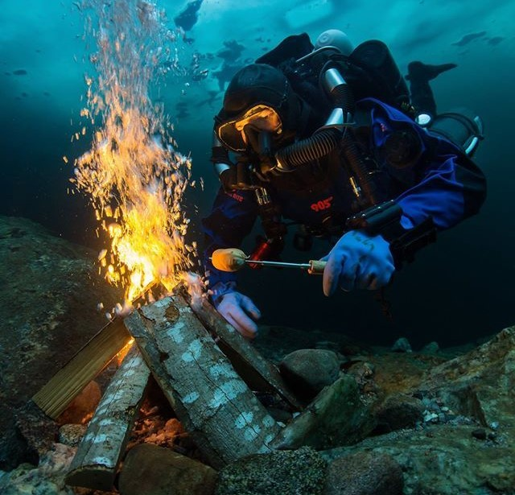

The seafloor of Mariana Trench Explorers Paradise
Home
Resort
Hotel
Ticket
Contact
Reference

Like fire camping, customers can set up camp, which looks like a transparent capsule, but its space is big enough for a person to lie down and rest, next to the fire. Also, there are two types of fire can be chosen. One is artificial fire, just looks like a real fire but it can only provide light. Another is a submarine volcanic fissure. However, although there is a fire safety device near the crack, this is still a very dangerous place, so customers must sign a security treaty and wear all safety equipment before entering this area and be ready to evacuate at any time.